Brands that care about straps: Christopher Ward
If you spend enough time in watch enthusiast circles, you will eventually hear the name Christopher Ward. Usually, it is followed by admiration for their value proposition or their impressive Light-catcher cases. But look a little closer and you will find another obsession that sets this British brand apart: a continuous pursuit of the perfect strap and bracelet.
 Nenad Pantelic • January 22, 2026
Nenad Pantelic • January 22, 2026
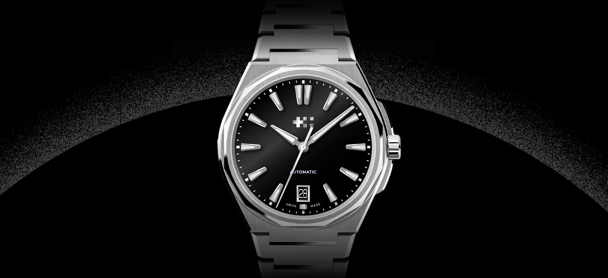
"Brands That Care" is a series of articles about watch companies that pay close attention to their straps. Choosing a strap should be more than just checking a box. There is a significant difference between a brand that treats a strap as a generic afterthought, and one that views it as an integral part of the design.
To the brands that care about straps - hats off to you.
Christopher Ward
Christopher Ward was founded in 2004, and as I remember they were one of the first brands to fully get on board with selling directly to consumers. They offered Swiss-made watches at fair prices, and the enthusiast community loved that.
CW slowly started appearing on forums and Instagram, and today, they are finally covered by media powerhouses like Hodinkee, Worn & Wound, and even Gear Patrol and GQ.
Their business model certainly helped them grab headlines, but I think their product development is the reason why they are super successful watch brand today.
We all know the 4 Ps of product marketing: Product, Price, Place, and Promotion, and I feel like they are on top of each of these elements.
They have gone so far that today they offer some highly technical complications. They have a "passing chime" (Sonnerie au Passage) watch with the Bel Canto, a C1 Moonphase that is accurate for 128 years if kept wound, a Worldtimer, a traveler’s GMT, and a Supercompressor, just to name a few.
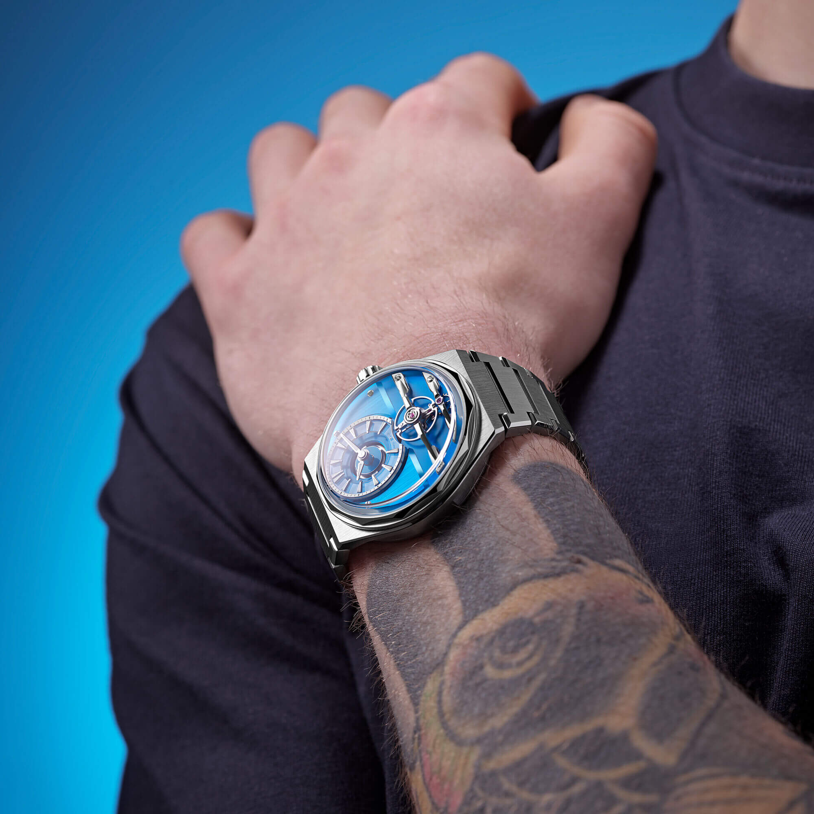
Fortunately, this dedication isn't reserved for the watches alone. It extends to their straps and bracelets as well.
What does Christopher Ward do well in the watch strap and bracelet segment?
In my opinion, Christopher Ward’s success comes down to three key principles:
- Variety
- Reasearch and Development
- Adjustability
Variety
Where many brands at this price point (and far above it) are happy to source catalog bracelets or standard leather and rubber straps, Christopher Ward is constantly working on their own solutions. They are among the companies that don’t just want the watch to look good, but also want it to fit perfectly from an ergonomic standpoint. This is the reason why they offer such a great variety of options.
- Contrast-stitched leather
- Tonal-stitched leather
- Leather straps with bronze hardware
- Leather straps with titanium hardware
- Leather straps with a deployant buckle
- Textured leather
- Smooth leather
- Stainless steel 3-link Bader bracelets
- Stainless steel 5-link Consort bracelets
- Titanium bracelets
- Bracelets for integrated sports watches
- DLC-coated bracelets
- Hybrid Cordura® & rubber straps
- FKM rubber straps
- Standard canvas straps
- Eco-friendly #tide ocean material® straps
- Cordura® straps with a quick-release Velcro® closure
Wow! This is an absolutely stellar selection, and honestly I’ve probably still missed a thing or two in the lineup.
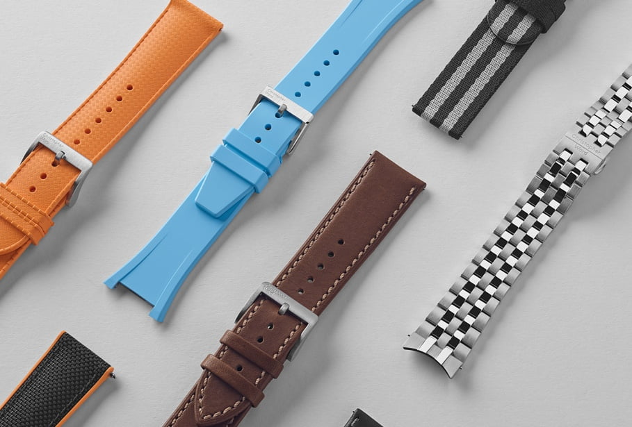
Reasearch and Development
This level of variety is no accident. It is clear that their lineup is the result of focused research and development.
This R&D is most obvious in how they manage ergonomics. They pay attention to the physical weight distribution of their watches and study wrist curvature and articulation to create accessories that fit well and wear comfortably.
I really think they design straps and bracelets in parallel with the watch cases. The end results are end links and strap profiles that perfectly flow into the case with no visual or physical disconnect.
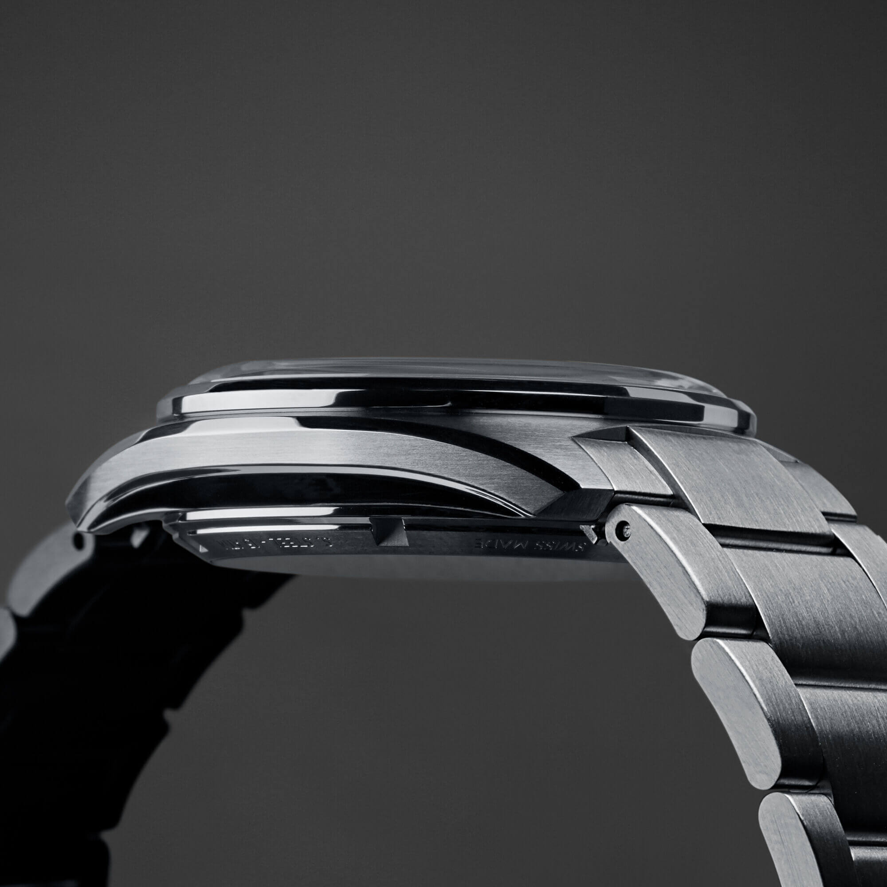
Lug widths, tapers, and case proportions are all carefully considered, creating a cohesive design that feels purposeful, and not just assembled.
Also, they don’t just pick materials off a shelf. They select high-grade FKM rubber, Cordura® hybrids, and upcycled ocean plastics specifically for their longevity. These materials are tested to survive years of wear.
Their bracelets use solid links, solid end-links, and precision tolerances, which reduce rattle and improve comfort.
To see these engineering details in action, particularly some of the well-integrated hidden features, check out this review:
This video is relevant because it showcases the Consort bracelet and demonstrates the tool-less micro-adjustment features, which are clearly the result of investing significant time and effort into R&D and engineering.
Adjustability
The perfect fit is a moving target, we know that. Your wrist size is constantly changing a bit because of a spike in humidity, a post-workout swell, or a long flight.
CW tackled this issue. I would even say that Christopher Ward was the first big brand that normalized "on-the-fly" micro-adjustment systems long before other players caught up. Others were still forcing us to carry toothpicks, screwdrivers, or spring-bar tools to adjust our straps and bracelets.
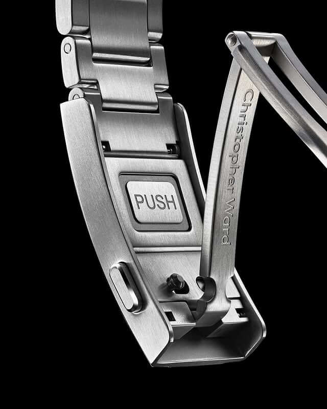
CW uses single-screw links, half-links, short-distance adjustment points, and a hidden "on-the-fly" extension systems.
This obsession with fit extends beyond bracelets. Their rubber and hybrid straps also have closely spaced adjustment points and, of course, quick-release spring bars.
Examples
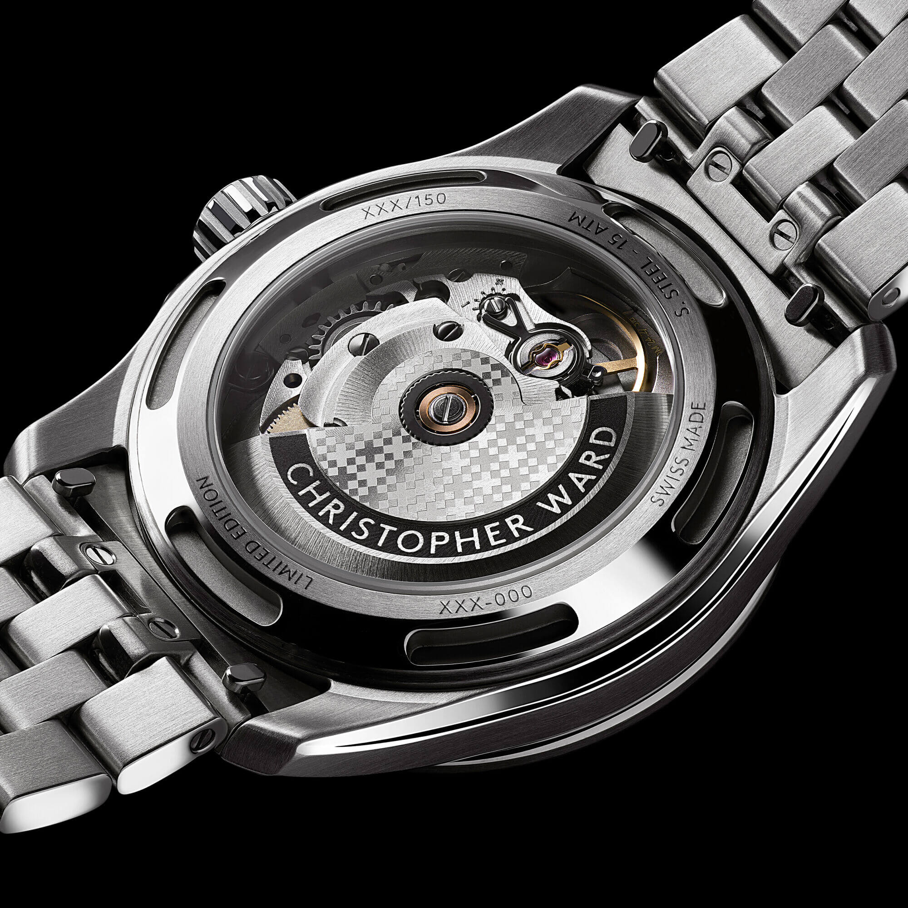
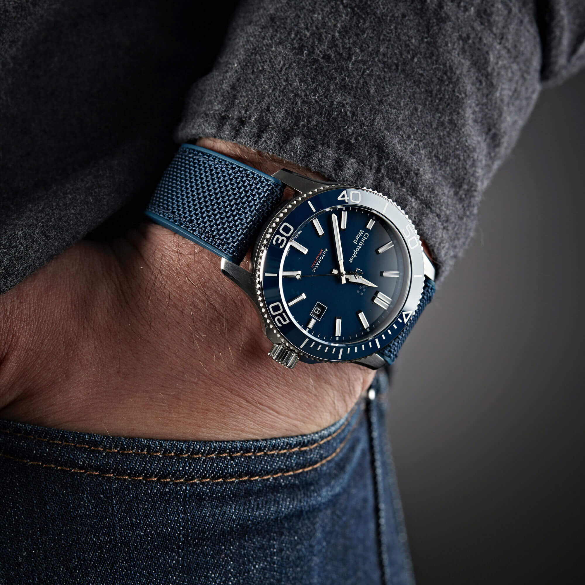

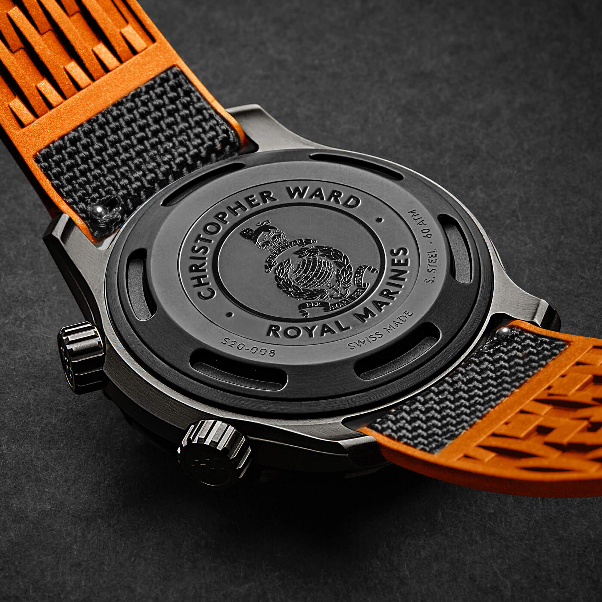
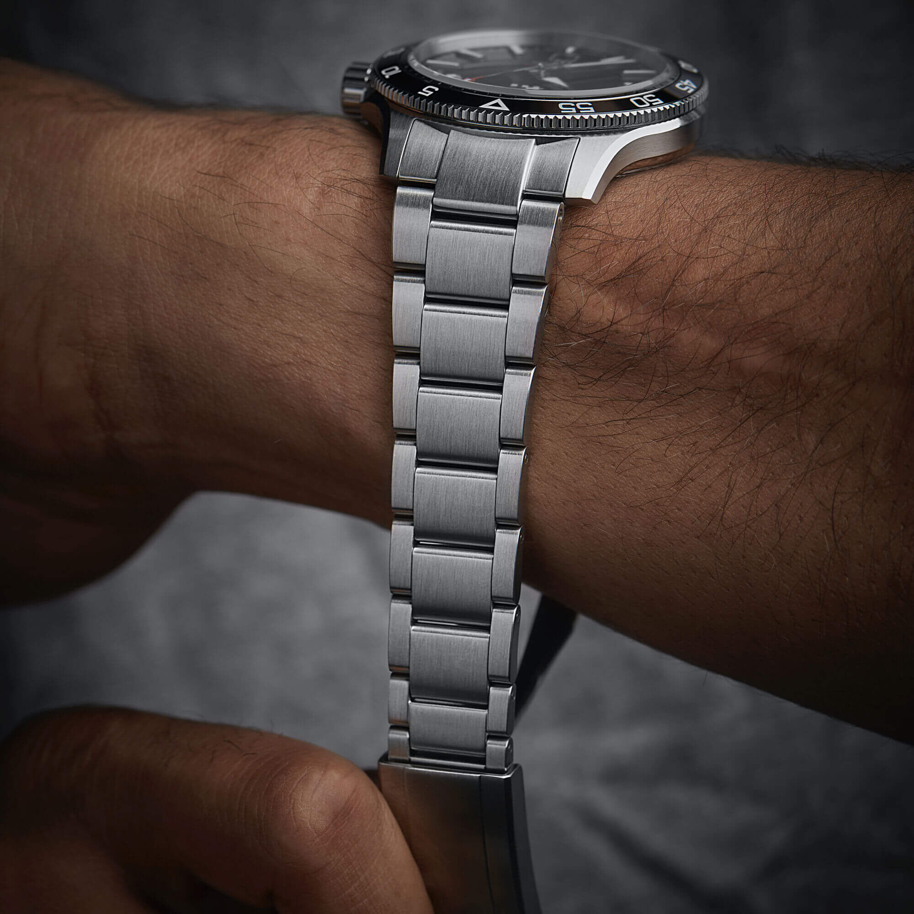

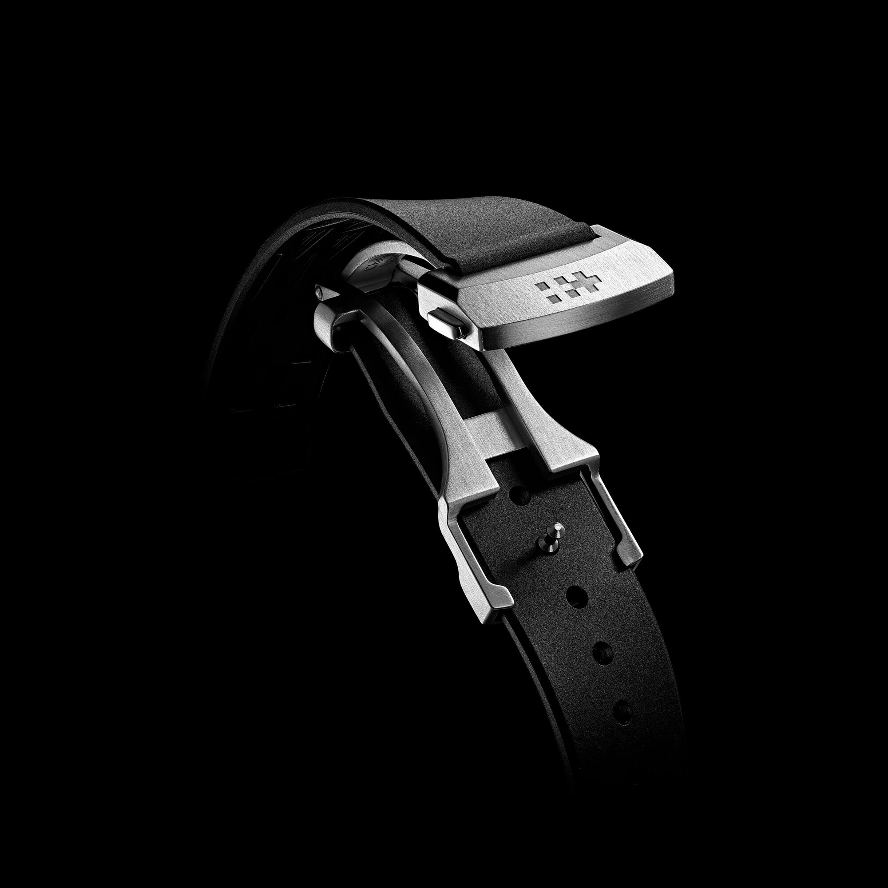
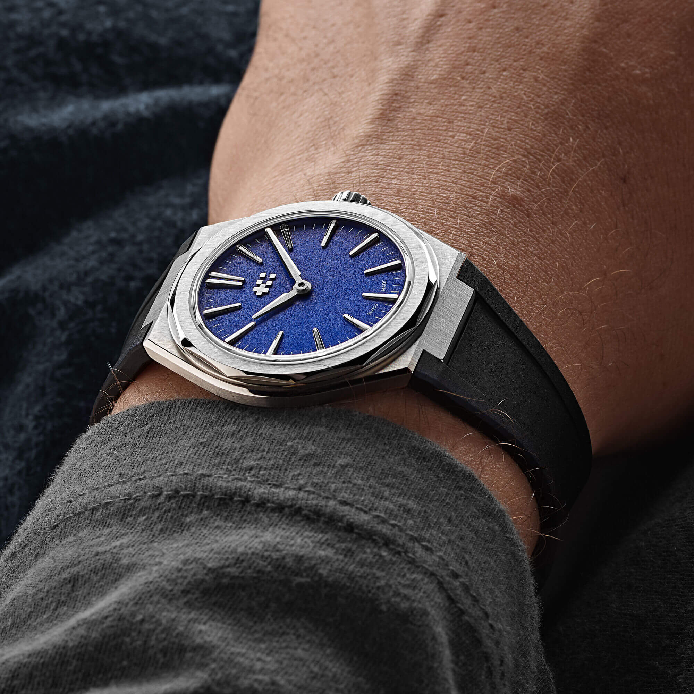

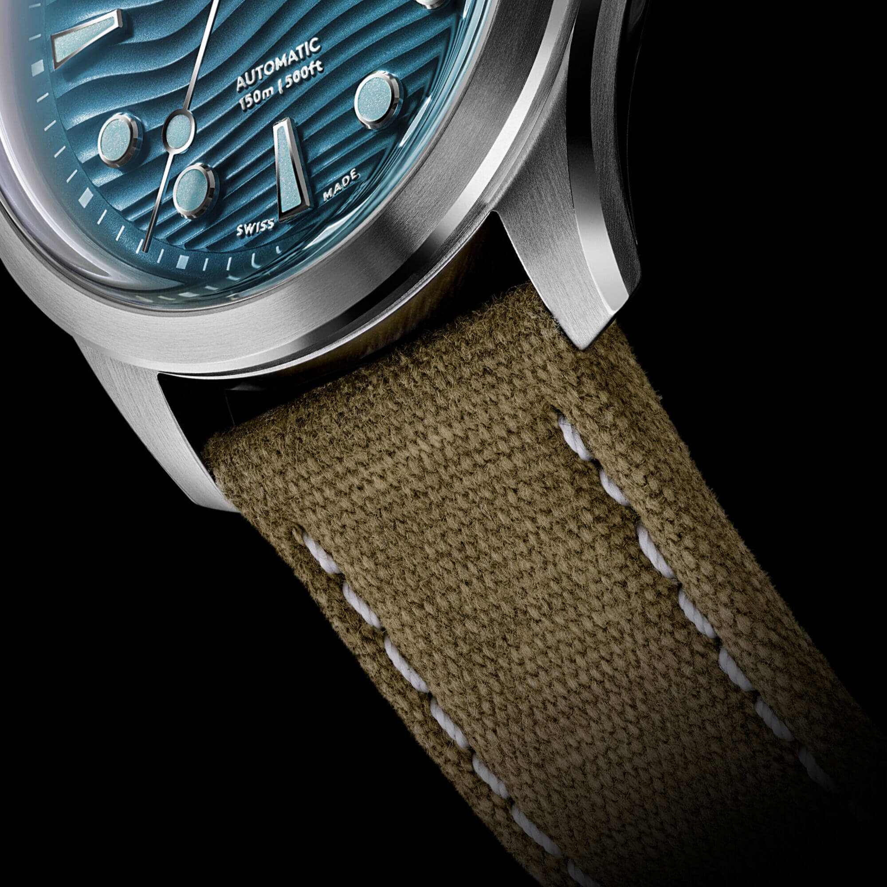
Final Words
That was really something!
Christopher Ward deserves real credit for raising the bar and proving that thoughtful engineering doesn’t have to come with an inflated price tag. I congratulate them on the work they’ve already done, and I’m pumped to see what comes next, because if their track record is any indication, they’re not standing still.